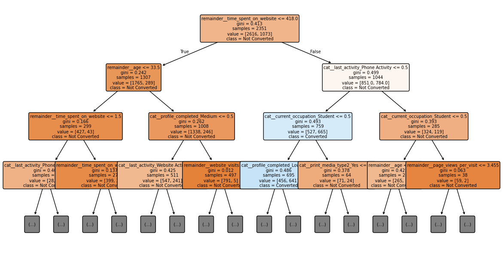
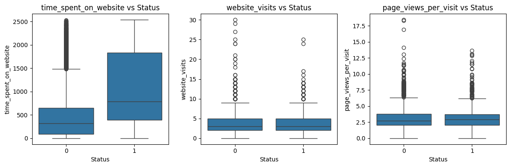
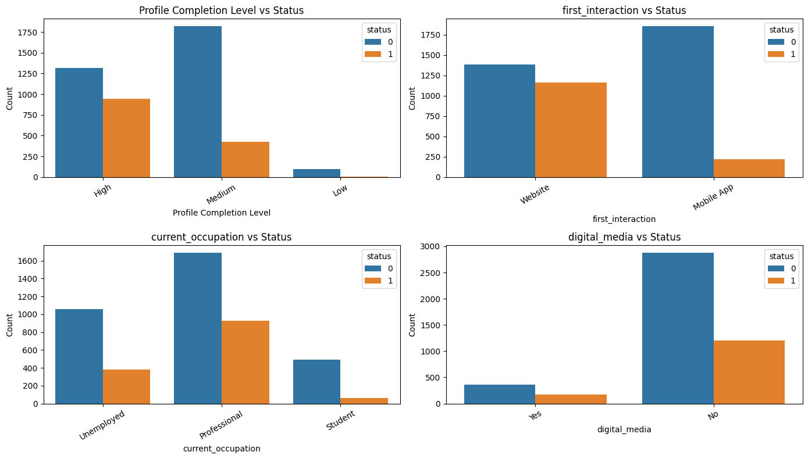
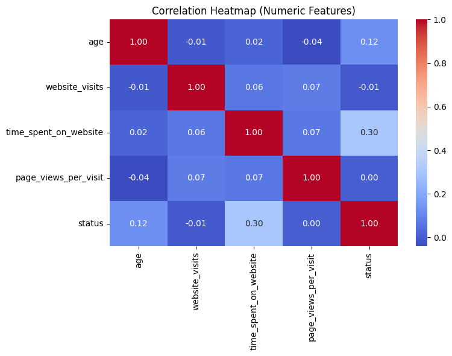
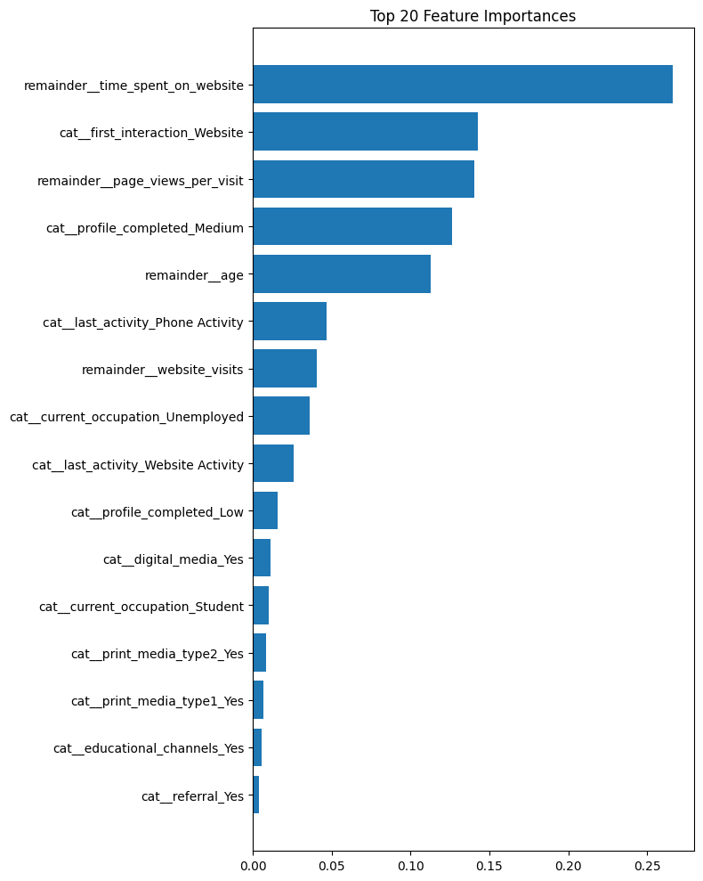
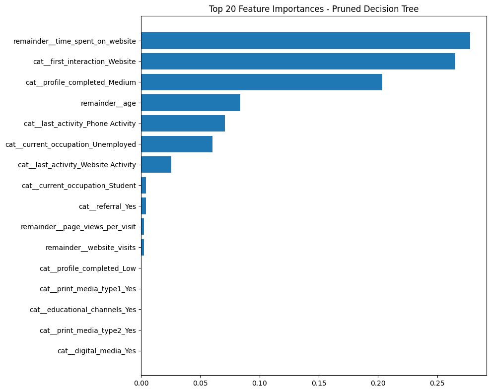
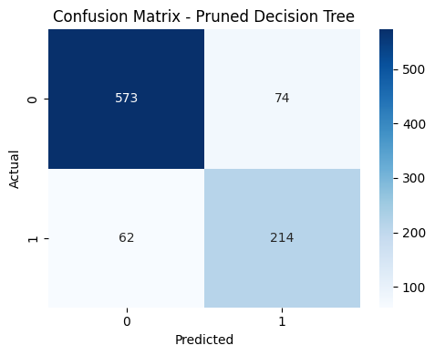
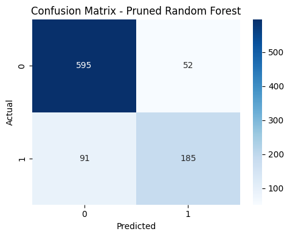
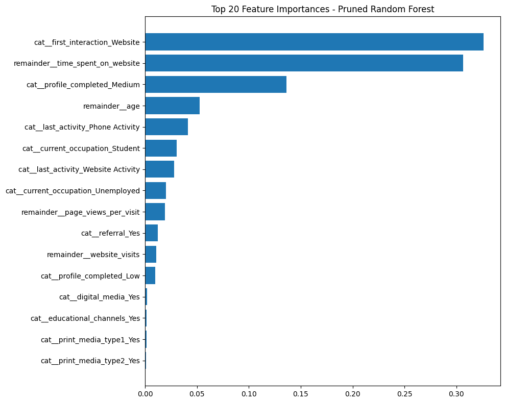

Predicting Potential Customers
With Decision Trees
Python, Pandas, NumPy, Scikit-learn
Matplotlib, Seaborn, SciPy
Decision Trees, Scikit-learn Pipelines, Supervised Classification, Feature Encoding, Model Evaluation
Customer records
Binary target variable
Problem Statement
Organizations often collect large amounts of customer data but lack a reliable way to determine which customers are most likely to convert. Treating all customers the same leads to inefficient marketing efforts and missed opportunities. The goal of this project is to build a supervised learning model that predicts whether a customer is likely to convert based on observed behavioral and demographic features. By identifying high-potential customers in advance, the model supports more targeted decision-making and more efficient allocation of resources.

Customer Signals to Conversion Decisions
This study examines how supervised machine learning can be used to predict customer conversion at the individual level. Using historical customer behavior and profile data, a decision-tree–based approach is applied to identify patterns associated with a higher likelihood of conversion.
The case study walks through the full modeling process—from defining the prediction objective and preparing the data, to building a reproducible pipeline and evaluating model performance. A simple decision tree is first used to visually illustrate how customer signals influence predictions, followed by a Random Forest model that builds on the same logic to improve overall prediction accuracy.
Business Context
The EdTech industry has been surging in the past decade immensely, and according to a forecast, the Online Education market would be worth $286.62bn by 2023 with a compound annual growth rate (CAGR) of 10.26% from 2018 to 2023. The modern era of online education has enforced a lot in its growth and expansion beyond any limit. Due to having many dominant features like ease of information sharing, personalized learning experience, transparency of assessment, etc, it is now preferable to traditional education.
In the present scenario due to the Covid-19, the online education sector has witnessed rapid growth and is attracting a lot of new customers. Due to this rapid growth, many new companies have emerged in this industry. With the availability and ease of use of digital marketing resources, companies can reach out to a wider audience with their offerings. The customers who show interest in these offerings are termed as leads. There are various sources of obtaining leads for Edtech companies, like
The company then nurtures these leads and tries to convert them to paid customers. For this, the representative from the organization connects with the lead on call or through email to share further details.
Objective
ExtraaLearn is an initial stage startup that offers programs on cutting-edge technologies to students and professionals to help them upskill/reskill. With a large number of leads being generated on a regular basis, one of the issues faced by ExtraaLearn is to identify which of the leads are more likely to convert so that they can allocate resources accordingly. You, as a data scientist at ExtraaLearn, have been provided the leads data to:
- Analyze and build an ML model to help identify which leads are more likely to convert to paid customers.
- Find the factors driving the lead conversion process.
- Create a profile of the leads which are likely to convert.
As the data scientist, my role was to analyze the customer dataset, build a supervised classification model, evaluate its ability to predict individual customer conversion, and translate the results into actionable business recommendations.
Data Dictionary
The dataset includes 4,612 customers and 69,180 individual data points across 15 features.
Customer Information
- ID: ID of the lead
- age: Age of the lead
- current_occupation: Current occupation of the lead
- Professional
- Unemployed
- Student
- first_interaction: How the lead first interacted with ExtraaLearn
- Website
- Mobile App
- profile_completed: Percentage of profile completed on the website or mobile app
- Low (0–50%)
- Medium (50–75%)
- High (75–100%)
- website_visits: Number of times the lead visited the website
- time_spent_on_website: Total time spent on the website
- page_views_per_visit: Average number of pages viewed per visit
- last_activity: Most recent interaction between the lead and ExtraaLearn
- Email Activity: Requested program details via email or received information such as brochures
- Phone Activity: Phone or SMS conversation with a representative
- Website Activity: Live chat interaction or profile updates on the website
- print_media_type1: Indicates whether the lead saw an ExtraaLearn advertisement in a newspaper
- print_media_type2: Indicates whether the lead saw an ExtraaLearn advertisement in a magazine
- digital_media: Indicates whether the lead saw an ExtraaLearn advertisement on digital platforms
- educational_channels: Indicates whether the lead heard about ExtraaLearn through educational channels such as forums or educational websites
- referral: Indicates whether the lead heard about ExtraaLearn through a referral
- status: Indicates whether the lead converted to a paid customer
Libraries
# Libraries to help with reading and manipulating data
import pandas as pd
import numpy as np
# libaries to help with data visualization
import matplotlib.pyplot as plt
import seaborn as sns
from sklearn.tree import DecisionTreeClassifier
from sklearn.model_selection import train_test_split
from sklearn.preprocessing import OneHotEncoder
from sklearn.compose import ColumnTransformer
from sklearn.pipeline import Pipeline
from sklearn.tree import DecisionTreeClassifier
from sklearn.metrics import accuracy_score, classification_report, confusion_matrix
from sklearn import tree
from sklearn.ensemble import RandomForestClassifier
from sklearn.metrics import confusion_matrix, roc_curve, auc
Data Overview
Dataset size
- 4,612 leads
- 15 columns (1 ID, 4 numeric behavioral, 9 categorical features, 1 target)
Target variable
- status (0 = not converted, 1 = converted)
Data types
Numeric
- age (int)
- website_visits (int)
- time_spent_on_website (int)
- page_views_per_visit (float)
- status (int, binary target)
Categorical
- ID
- current_occupation
- first_interaction
- profile_completed
- last_activity
- print_media_type1
- print_media_type2
- digital_media
- educational_channels
- referral
The data has 0 missing or incomplete values.
| Missing_Values |
|---|
| 0 |
Exploratory Data Analysis
Questions
- Leads will have different expectations from the outcome of the course, and current occupation may play a key role in getting them to participate in the program. I Analyzed how current occupations affects lead status.
- The company’s first impression on the customer may impact conversion. Determine whether the first channel of interaction affects lead status.
- The company uses multiple modes to interact with prospects. I Identified which mode of interaction works best.
- The company acquires leads from various channels such as print media, digital media, and referrals. I Identified which channels have the highest lead conversion rate.
- Prospects are required to create a profile to access additional information. I Evaluated whether having more detailed prospect information increases the likelihood of conversion.
Data Preprocessing
- Missing value treatment (0 missing data)
- Feature engineering
- Outlier detection and treatment
- Preparing data for modeling
- Any other preprocessing steps (if needed)
Modeling Overview
The target variable (status) and unique identifier (ID) were separated from the feature set. Numeric behavioral features were kept as-is, while categorical variables were converted using one-hot encoding to prepare them for modeling.
Preprocessing was handled with a ColumnTransformer and combined with a DecisionTreeClassifier in a single pipeline for consistent handling of training and test data. The dataset was split into 80% training and 20% testing with stratification to preserve class balance, and the model was then trained on the processed data.
# 1. Select features + target
X = data.drop(["status", "ID"], axis=1)
y = data["status"]
# 2. Identify column types
numeric_features = ['age','website_visits','time_spent_on_website','page_views_per_visit']
categorical_features = [
'current_occupation','first_interaction','profile_completed',
'last_activity','print_media_type1','print_media_type2',
'digital_media','educational_channels','referral'
]
# 3. Preprocessor (only OneHotEncoding)
preprocessor = ColumnTransformer(
transformers=[
('cat', OneHotEncoder(drop='first', handle_unknown='ignore'), categorical_features)
],
remainder='passthrough' # keep numeric columns as-is
)
# 4. Train-test split
X_train, X_test, y_train, y_test = train_test_split(
X, y, test_size=0.2, random_state=42, stratify=y
)
# 5. Decision Tree Model Pipeline
dt_model = Pipeline(steps=[
('preprocess', preprocessor),
('clf', DecisionTreeClassifier(random_state=42))
])
# 6. Fit the model
dt_model.fit(X_train, y_train)
Key Findings
Conversion is primarily driven by user engagement behavior. Leads who convert spend more time on the website, indicating stronger intent. The class distribution shows more non-converted than converted leads, which informed stratified sampling. Correlation analysis further supports prioritizing behavioral features over demographics when modeling conversion.
Figure 1 — Time Spent vs Conversion
Converted users consistently spend more time on the website, making time spent a strong indicator of conversion intent.

plt.figure(figsize=(6,4))
sns.boxplot(x=data['status'], y=data['time_spent_on_website'])
plt.title("Time Spent on Website vs Conversion Status")
plt.xlabel("Status (0 = Not Converted, 1 = Converted)")
plt.ylabel("Time Spent on Website")
plt.tight_layout()
plt.savefig("timespent.png", dpi=300)
plt.show()
Figure 2 — Conversion Status Distribution
The dataset contains a higher proportion of non-converted leads, reinforcing the need to account for class imbalance during modeling.

key_categorical = [
'profile_completed',
'first_interaction',
'current_occupation',
'digital_media'
]
plt.figure(figsize=(14,8))
for i, col in enumerate(key_categorical, 1):
plt.subplot(2,2,i)
sns.countplot(x=data[col], hue=data['status'])
# Custom title + label ONLY for profile_completed
if col == 'profile_completed':
plt.title("Profile Completion Level vs Status")
plt.xlabel("Profile Completion Level")
else:
plt.title(f"{col} vs Status")
plt.xlabel(col)
plt.ylabel("Count")
plt.xticks(rotation=30)
plt.tight_layout()
plt.show()
Figure 3 — Correlation of Numeric Features
Website engagement metrics show stronger relationships with conversion than age, supporting the modeling focus on behavioral features.

plt.figure(figsize=(7,5))
corr = data[
['age','website_visits','time_spent_on_website',
'page_views_per_visit','status']
].corr()
sns.heatmap(corr, annot=True, cmap="coolwarm", fmt=".2f")
plt.title("Correlation Heatmap of Numeric Features")
plt.tight_layout()
plt.savefig("correlationwebsite.png", dpi=300)
plt.show()
What the EDA Shows
-
Converted leads exhibit clearer high-intent behavior.
Visual analysis shows that converted users spend significantly more time on the website and view more pages per visit. This suggests deeper, more intentional engagement rather than repeated or exploratory browsing.
-
Engagement quality matters more than visit frequency.
While time spent and pages viewed per visit are positively associated with conversion, total website visits show a weaker or negative relationship. This indicates that meaningful engagement is more predictive than sheer visit count.
-
Behavioral features outperform demographic signals.
Correlation analysis shows that behavioral metrics have stronger relationships with conversion than demographic variables such as age, reinforcing the decision to prioritize user behavior in modeling.
-
Class imbalance informed modeling decisions.
The target distribution reveals that most leads do not convert. This imbalance was accounted for during train-test splitting to ensure reliable model evaluation.
Key Questions Addressed Through Analysis
-
How does current occupation affect lead status?
Professionals show the highest conversion rate among all occupation groups. Although they make up the largest share of leads, they also convert at a higher proportion compared to unemployed and student leads. Students convert the least, suggesting lower intent or reduced ability to purchase. Overall, occupation plays a meaningful role, with professionals being the most likely to enroll.
-
What is the impact of the first interaction channel on lead status?
The first interaction channel shows only minor differences in conversion behavior. Website users convert at a slightly higher rate than mobile app users, but the overall pattern remains similar across both groups. This suggests that the initial point of contact has a limited influence on conversion outcomes.
-
Which mode of interaction works best?
Analysis of the last recorded activity indicates that website-based interactions (such as live chat or profile updates) are associated with the highest conversion rates. Email interactions perform moderately well, while phone interactions result in the lowest conversion rate. This suggests that digitally engaged leads, particularly those interacting through the website, are more likely to convert.
-
Which acquisition channels have the highest conversion rate?
Among print media, digital media, educational channels, and referrals, referral-based leads exhibit the highest conversion rates. Although referrals represent a smaller portion of total leads, they consistently demonstrate stronger intent. Other acquisition channels show minimal differences in conversion behavior and have relatively low influence on final outcomes.
-
Does providing more profile details increase conversion likelihood?
Profile completion emerges as one of the strongest indicators of conversion. Leads with high profile completion convert at the highest rate, followed by those with medium completion, while low-completion leads rarely convert. This suggests that leads who provide more detailed information are significantly more likely to progress through the enrollment process.
Building a Decision Tree Model
A Decision Tree model was built to predict lead conversion status based on behavioral, demographic, and interaction-based features. Decision Trees are well suited for this task because they can handle both numerical and categorical data, capture non-linear relationships, and provide clear interpretability. This makes the model effective not only for prediction, but also for understanding which factors most strongly influence conversion outcomes.
Decision Tree Model Implementation
X = data.drop(["status", "ID"], axis=1)
y = data["status"]
numeric_features = [
"age",
"website_visits",
"time_spent_on_website",
"page_views_per_visit"
]
categorical_features = [
"current_occupation",
"first_interaction",
"profile_completed",
"last_activity",
"print_media_type1",
"print_media_type2",
"digital_media",
"educational_channels",
"referral"
]
preprocessor = ColumnTransformer(
transformers=[
("cat", OneHotEncoder(drop="first", handle_unknown="ignore"), categorical_features)
],
remainder="passthrough"
)
X_train, X_test, y_train, y_test = train_test_split(
X, y, test_size=0.2, random_state=42, stratify=y
)
dt_model = Pipeline(steps=[
("preprocess", preprocessor),
("clf", DecisionTreeClassifier(random_state=42))
])
dt_model.fit(X_train, y_train)
y_pred = dt_model.predict(X_test)
print("Accuracy:", accuracy_score(y_test, y_pred))
print(confusion_matrix(y_test, y_pred))
print(classification_report(y_test, y_pred))
best_tree = dt_model.named_steps["clf"]
features = dt_model.named_steps["preprocess"].get_feature_names_out()
importances = best_tree.feature_importances_
fi_df = pd.DataFrame({
"Feature": features,
"Importance": importances
}).sort_values("Importance", ascending=False)
plt.figure(figsize=(8, 10))
plt.barh(fi_df["Feature"].head(20), fi_df["Importance"].head(20))
plt.title("Top 20 Feature Importances")
plt.gca().invert_yaxis()
plt.tight_layout()
plt.show()
Model Performance
The Decision Tree model achieved an overall accuracy of 80.9% on the test set. Performance differs across classes, with stronger results for non-converted leads than converted leads.
Key Metrics
- Accuracy: 0.81
- Precision (Converted): 0.68
- Recall (Converted): 0.69
- F1-score (Converted): 0.68
Confusion Matrix
| Predicted: Not Converted | Predicted: Converted | |
|---|---|---|
| Actual: Not Converted | 557 | 90 |
| Actual: Converted | 86 | 190 |
Interpretation
The model correctly identifies most non-converted leads, while maintaining reasonable recall for converted leads. Although conversion is the minority class, the model captures a substantial portion of true conversions, making it suitable for identifying high-intent prospects while minimizing false positives.
Decision Tree Visualization
The trained Decision Tree model provides a clear view of how different features contribute to predicting lead conversion. The visualization highlights the most influential splits used by the model.

Tree Summary
Behavioral engagement metrics such as total time spent on the website and page views per visit emerged as the strongest predictors of lead conversion. These features produced the most consistent and informative splits in the tree, indicating that deeper browsing behavior reflects higher intent.
Profile completion also contributed to the model’s predictions, but its influence was distributed across multiple one-hot encoded variables, making it appear less prominent compared to continuous behavioral features. Overall, engagement behavior was the dominant driver of conversion in the Decision Tree model.
Training vs Test Performance
The Decision Tree achieved a training accuracy of 0.9997 and a test accuracy of 0.8093. The gap between training and test performance indicates that the model is overfitting the training data.
This result highlights the need for pruning or constraining tree depth to improve generalization to unseen data.
Pruned Decision Tree (Model Tuning)
# Build and train a pruned Decision Tree
dt_pruned = Pipeline(steps=[
("preprocess", preprocessor),
("clf", DecisionTreeClassifier(
max_depth=5, # limit depth
min_samples_split=20, # min samples to split a node
min_samples_leaf=5, # min samples in a leaf
random_state=42
))
])
dt_pruned.fit(X_train, y_train)
# Check performance for pruned tree
print("Training Accuracy (pruned):", dt_pruned.score(X_train, y_train))
print("Test Accuracy (pruned):", dt_pruned.score(X_test, y_test))
# 1) Confusion Matrix Heatmap for pruned Decision Tree
y_pred_dt_pruned = dt_pruned.predict(X_test)
cm = confusion_matrix(y_test, y_pred_dt_pruned)
plt.figure(figsize=(5, 4))
sns.heatmap(cm, annot=True, fmt='d', cmap='Blues')
plt.xlabel("Predicted")
plt.ylabel("Actual")
plt.title("Confusion Matrix - Pruned Decision Tree")
plt.tight_layout()
plt.show()
# 2) Feature Importance Bar Chart (Top 20) for pruned Decision Tree
dt_clf_pruned = dt_pruned.named_steps["clf"]
dt_features = dt_pruned.named_steps["preprocess"].get_feature_names_out()
dt_importances_pruned = dt_clf_pruned.feature_importances_
dt_df_pruned = pd.DataFrame({
"Feature": dt_features,
"Importance": dt_importances_pruned
}).sort_values("Importance", ascending=False)
plt.figure(figsize=(10, 8))
plt.barh(dt_df_pruned["Feature"].head(20), dt_df_pruned["Importance"].head(20))
plt.title("Top 20 Feature Importances - Pruned Decision Tree")
plt.gca().invert_yaxis()
plt.tight_layout()
plt.show()
Pruned Model Performance
After applying pruning, the Decision Tree achieved a training accuracy of 0.8615 and a test accuracy of 0.8527.
The reduced gap between training and test accuracy indicates that pruning successfully mitigated overfitting and improved the model’s ability to generalize to unseen data.
Feature Importance — Pruned Decision Tree
Feature importance from the pruned model shows a more stable hierarchy of predictors, with behavioral engagement metrics continuing to dominate while reducing noise from less informative splits.

Confusion Matrix — Pruned Decision Tree
The confusion matrix illustrates improved balance between correctly identifying converted and non-converted leads, reflecting better overall model reliability after pruning.

Pruned Model Interpretation
The confusion matrix highlights how many converting and non-converting leads were correctly and incorrectly classified, showing the balance between true positives and false positives after pruning. Compared to the unpruned model, the pruned tree shifts emphasis toward more stable and interpretable predictors, including a stronger influence from website-based first interactions and sustained time spent on the website. Profile completion at the medium level also increases in importance, indicating a more nuanced role of engagement depth in predicting conversion.
Pruning parameters played a key role in improving model generalization.
Setting max_depth=5 limited the complexity of the tree,
min_samples_split=20 prevented overly granular splits,
and min_samples_leaf=5 ensured that each leaf represented a meaningful
number of observations. Together, these constraints reduced overfitting and brought
training and test accuracy closer in value, resulting in a more reliable and robust model.
Using a Random Forest Model
# Build a Random Forest model
rf_model = Pipeline(steps=[
("preprocess", preprocessor), # one-hot encode categorical features
("clf", RandomForestClassifier(
n_estimators=200, # number of trees in the forest
max_depth=None, # allow trees to grow fully
random_state=42,
n_jobs=-1 # use all CPU cores
))
])
# Train the model
rf_model.fit(X_train, y_train)
# Predict on the test set
y_pred_rf = rf_model.predict(X_test)
# Evaluate performance
print("Training Accuracy:", rf_model.score(X_train, y_train))
print("Test Accuracy:", rf_model.score(X_test, y_test))
print(confusion_matrix(y_test, y_pred_rf))
print(classification_report(y_test, y_pred_rf))
Why Use a Random Forest Model
I used a Random Forest model to improve predictive performance and reduce overfitting observed in the single Decision Tree. By combining predictions from many decision trees, the Random Forest captured more stable patterns in the data while reducing sensitivity to noise and individual splits.
This approach is well suited for this problem because it handles mixed data types, models non-linear relationships, and provides more reliable generalization when predicting lead conversion.
Random Forest Performance
Training Accuracy: 0.9997
Test Accuracy: 0.8624
A large difference between training and test accuracy, along with near-perfect performance on the training data, suggests strong overfitting in the unregularized Random Forest model.
Pruning the Random Forest Model
# Build a pruned / regularized Random Forest model
rf_pruned = Pipeline(steps=[
("preprocess", preprocessor), # one-hot encode categorical features
("clf", RandomForestClassifier(
n_estimators=200, # number of trees
max_depth=6, # limit how deep each tree can grow
min_samples_split=20, # min samples needed to split a node
min_samples_leaf=5, # min samples in each leaf
max_features="sqrt", # use a subset of features at each split
random_state=42,
n_jobs=-1
))
])
# Train the pruned Random Forest
rf_pruned.fit(X_train, y_train)
# Predict on the test set
y_pred_rf_pruned = rf_pruned.predict(X_test)
# Check performance
print("Training Accuracy:", rf_pruned.score(X_train, y_train))
print("Test Accuracy:", rf_pruned.score(X_test, y_test))
print(confusion_matrix(y_test, y_pred_rf_pruned))
print(classification_report(y_test, y_pred_rf_pruned))
Random Forest Pruning Strategy
Pruning was applied to the Random Forest by constraining individual tree growth and enforcing minimum sample
requirements at each split. Setting max_depth=6 limited how deep each tree could grow,
min_samples_split=20 prevented splits based on very small subsets of data, and
min_samples_leaf=5 ensured that each terminal node represented a sufficient number of observations.
Additionally, max_features="sqrt" restricted the number of features considered at each split,
encouraging diversity across trees and reducing reliance on any single predictor. Together, these pruning
choices reduced overfitting and produced more stable performance on unseen data.
Pruned Random Forest Performance
Training Accuracy: 0.8688
Test Accuracy: 0.8451
Pruned Random Forest Results
After regularization, the Random Forest model shows closer alignment between training and test performance, indicating reduced overfitting and improved generalization.
Confusion Matrix — Pruned Random Forest
The confusion matrix shows how many converting and non-converting leads were classified correctly versus incorrectly. Compared to the pruned Decision Tree, the Random Forest identifies more true positives (595 vs 573), meaning it correctly captures a larger number of converting leads.
However, the Random Forest also exhibits slightly higher false negatives, indicating that this improvement in true positives comes with a trade-off. Overall, the two pruned models perform similarly, with the Random Forest favoring broader detection of converters at the cost of missing some cases.

Feature Importance — Pruned Random Forest
Feature importance from the pruned Random Forest highlights differences from the Decision Tree model. First interaction via the website emerges as the strongest predictor of conversion, while medium profile completion plays a less dominant role. Overall, engagement-based features remain the primary drivers of conversion.

After pruning, the training and test accuracy are closer in value, indicating improved generalization. Compared to the Decision Tree, the Random Forest places more weight on website-based first interactions, while medium profile completion is less influential. These differences show how the model prioritizes engagement signals while maintaining similar overall performance.
Actionable Insights and Recommendations
Actionable Insights
-
Website-first interactions signal the highest intent.
Users who begin their journey on the website show the strongest intent to progress. The model identified a website-based first interaction as the most powerful predictor, suggesting these users are actively exploring and more open to moving forward.
-
Time spent on the platform reflects genuine interest.
Longer browsing sessions are closely associated with higher motivation. When users spend more time reviewing content or navigating the site, they demonstrate meaningful engagement with the offering.
-
Medium profile completion indicates purposeful exploration.
Users with partially completed profiles convert at higher rates than those with minimal information. This level of completion appears to reflect thoughtful engagement without early-stage drop-off.
-
Demographic and activity details provide secondary context.
Attributes such as age, occupation, and most recent activity (e.g., website use or phone contact) help distinguish casual visitors from more committed prospects. These factors refine predictions but do not outweigh core behavioral indicators.
-
Additional engagement metrics add incremental value.
Page views per visit, overall website visits, and referral-based traffic contribute to prediction accuracy, but their influence is smaller compared to initial website interaction and time spent.
Recommendations
-
Strengthen the website entry experience.
Since website-initiated visits are tied to the highest intent, optimizing landing pages, navigation, and content presentation can improve engagement and lead quality.
-
Prioritize follow-up for highly engaged users.
Leads who spend more time browsing or reviewing content should enter accelerated or personalized outreach flows, as this behavior signals strong interest.
-
Encourage mid-level profile completion.
Subtle design nudges—such as progress indicators or gentle reminders—can guide users to complete more of their profile, which aligns with higher conversion likelihood.
-
Use demographic and recent-activity cues to tailor messaging.
While not primary drivers, factors like occupation, age, and last interaction type provide useful nuance and can help personalize communication strategies.
-
Maintain referral and educational acquisition channels.
Although these channels have less influence than website-first contact, they continue to attract motivated prospects and should remain part of the overall acquisition strategy.
This project demonstrates my ability to move from exploratory analysis to interpretable, production-ready machine learning models for predicting lead conversion. I analyzed behavioral, categorical, and demographic data using Python, Pandas, and scikit-learn, identifying engagement-driven signals that distinguish high-intent leads from casual visitors.
I built and evaluated Decision Tree and Random Forest models, diagnosed overfitting through train–test performance gaps, and applied pruning strategies to improve generalization. By comparing unpruned and pruned models, I demonstrated how model constraints affect stability, feature importance, and predictive reliability.
Throughout the process, I emphasized interpretability—using feature importance, confusion matrices, and clear visualizations—to translate model behavior into actionable insights. The final results highlight how engagement quality, rather than raw traffic or demographics, drives conversion, reinforcing my ability to connect technical modeling decisions to meaningful business recommendations.